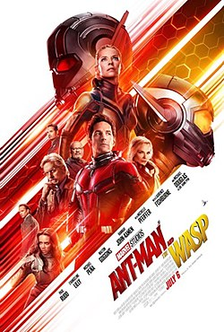

Fundada em 1939, a Marvel Comics é uma das editoras de quadrinhos mais influentes e reconhecidas em todo o mundo. Desde então, temos cativado a imaginação de pessoas de todas as idades com nossos personagens icônicos, narrativas emocionantes e universo vasto e interconectado.
Na Marvel, acreditamos que histórias têm o poder de inspirar, entreter e unir pessoas. Por décadas, temos contado histórias que exploram temas universais como coragem, amizade, justiça e superação. Nossos personagens lendários, como Homem-Aranha, Homem de Ferro, Capitão América, Thor, Hulk, entre muitos outros, tornaram-se símbolos de heroísmo e esperança para gerações de fãs ao redor do globo.
Além dos quadrinhos, expandimos nosso universo para outras mídias, incluindo filmes, séries de televisão, animações, jogos e muito mais. Nosso objetivo é oferecer experiências memoráveis e emocionantes que transcendam as páginas dos quadrinhos e cheguem a públicos de todas as partes do mundo.
Na Marvel, estamos comprometidos com a diversidade e inclusão, celebrando a variedade de perspectivas e experiências que enriquecem nossas histórias e nossa comunidade de fãs. Acreditamos que todos devem se sentir representados e valorizados em nossas narrativas, e continuaremos a trabalhar para garantir que isso aconteça.
Junte-se a nós enquanto continuamos a explorar novos mundos, contar novas histórias e inspirar o herói que existe em todos nós. Seja você um fã de longa data ou alguém que está apenas começando sua jornada pelo Universo Marvel, há sempre uma aventura esperando por você aqui.
Seja Bem-Vindo As sagas do universo Marvel
Aniquilação
"Aniquilação" é uma saga de quadrinhos da Marvel em que uma entidade cósmica chamada Aniquilador ameaça destruir o universo, levando heróis como o Senhor das Estrelas e o Surfista Prateado a se unirem para detê-lo. A história é repleta de batalhas intergalácticas e sacrifícios heroicos, expandindo o universo Marvel para além da Terra. Veja Mais
Desafio Infinito
"Desafio Infinito" é uma saga de quadrinhos da Marvel em que o vilão Thanos busca as seis Joias do Infinito para obter poder absoluto. Heróis da Marvel, como os Vingadores e os Guardiões da Galáxia, se unem para detê-lo, resultando em uma batalha épica pelo destino do universo. A história é marcada por confrontos intensos e exploração de temas cósmicos e filosóficos. Veja Mais
Dinastia M
"Dinastia M" é uma saga da Marvel em que a Feiticeira Escarlate altera a realidade, criando um mundo onde os mutantes dominam e os humanos são minoria. A história explora as consequências dessa mudança e suas ramificações para heróis e vilões. Veja Mais
Era do Apocalipse
Na saga "Era do Apocalipse", um universo alternativo é criado quando o Professor Xavier é morto antes de fundar os X-Men, permitindo que o vilão Apocalipse domine a Terra. Heróis e vilões se aliam de maneiras diferentes para resistir ao seu domínio. Veja Mais
Guerra Civil
"Guerra Civil" é uma saga de quadrinhos da Marvel em que os super-heróis se dividem em dois grupos: aqueles que apoiam o registro de identidades e trabalho para o governo, liderados pelo Homem de Ferro, e aqueles que resistem, liderados pelo Capitão América. A disputa culmina em uma guerra civil entre os heróis. Veja Mais
Guerra Kree-Skrull
A saga "Guerra Kree-Skrull" é uma história da Marvel Comics que ocorreu em 1971. Ela envolve um conflito milenar entre duas poderosas raças alienígenas, os Kree e os Skrull, que acabam trazendo sua guerra para a Terra. Os Vingadores são forçados a intervir quando a humanidade se torna um peão nesse conflito intergaláctico. A saga aborda temas de diplomacia intergaláctica, manipulação política e a luta pela sobrevivência da Terra diante desses poderes cósmicos em conflito. Veja Mais
Guerras Secretas
"Guerras Secretas" é uma saga da Marvel em que heróis e vilões são transportados para um planeta alienígena chamado Battleworld pelo poderoso Beyonder, onde são forçados a lutar uns contra os outros pelo destino do universo. Veja Mais
Guerras Secretas II
"Guerras Secretas II" é uma saga em que o Beyonder retorna à Terra em forma humana, provocando conflitos entre heróis e vilões. A história explora temas de poder e moralidade enquanto os personagens enfrentam dilemas éticos. Veja Mais
Infinito
A saga "Infinito" é uma história da Marvel Comics que ocorreu em 1991. Ela é centrada no vilão Thanos, que busca reunir as seis Joias do Infinito para obter poder absoluto. Para detê-lo, os heróis mais poderosos do universo, incluindo os Vingadores, os Guardiões da Galáxia e os X-Men, unem forças em uma batalha épica. A saga explora temas de poder, sacrifício e moralidade, enquanto os heróis lutam para proteger o universo da ameaça de Thanos. Veja Mais
Invasão Secreta
A saga "Invasão Secreta" é uma história da Marvel Comics que ocorreu em 2008. Ela é centrada em uma invasão secreta da Terra por uma raça alienígena chamada Skrulls, que têm a capacidade de se disfarçar como qualquer pessoa. Os Skrulls infiltraram-se nas fileiras dos super-heróis da Terra, criando uma atmosfera de desconfiança e paranoia. Os heróis restantes precisam descobrir quem são os Skrulls disfarçados e lutar para proteger seu planeta e sua identidade. A saga explora temas de confiança, identidade e lealdade enquanto os heróis enfrentam essa ameaça desconhecida. Veja Mais
Jovens Vingadores: A Cruzada das Crianças
"Jovens Vingadores: A Cruzada das Crianças" é uma saga em que os Jovens Vingadores enfrentam o vilão Célere, que afirma ser o filho de Feiticeira Escarlate e Mercúrio. Eles lutam para detê-lo e salvar o mundo, enfrentando desafios pessoais ao longo do caminho. Veja Mais
Marvels
"Marvels" é uma minissérie de quadrinhos que segue a ascensão dos super-heróis da Marvel através dos olhos do fotojornalista Phil Sheldon. A história explora o impacto dos super-heróis na sociedade humana ao longo de décadas. Veja Mais
O Cerco
A saga "O Cerco" da Marvel Comics, ocorrida em 2010, narra o retorno de Norman Osborn, que planeja invadir Asgard, lar dos deuses nórdicos, alegando uma ameaça aos EUA. Os Vingadores e outros heróis se unem para defendê-la. A história apresenta batalhas épicas e explora temas de corrupção e heroísmo. Veja Mais
Massacre Marvel
A saga "Massacre Marvel" da Marvel Comics, também conhecida como "Massacre do Rei do Crime", é uma história em que o Rei do Crime organiza uma série de ataques coordenados contra os super-heróis de Nova York, visando eliminá-los e dominar a cidade. Os heróis, incluindo o Homem-Aranha e o Demolidor, enfrentam uma batalha desesperada para deter o plano do vilão. Veja Mais
Planeta Hulk e Hulk Contra o Mundo
A saga "Planeta Hulk" mostra Hulk sendo exilado para um planeta distante, onde se torna um gladiador e lidera uma revolução. "Hulk Contra o Mundo" ocorre quando ele retorna à Terra em busca de vingança contra os Illuminati, enfrentando todos os heróis em uma batalha furiosa. Veja Mais
Vingadores Eternamente
Na saga "Vingadores Eternamente", Kang, o Conquistador, forma uma equipe de Vingadores de diferentes períodos temporais para enfrentar a ameaça cósmica do "Destino", que busca destruir o tempo e o espaço. Os Vingadores Eternamente lutam para salvar a realidade enfrentando desafios ao longo do tempo. Veja Mais
Vingadores vs. X-Men
Na saga "Vingadores vs. X-Men", os Vingadores e os X-Men entram em conflito sobre o destino da Fênix, uma entidade cósmica. Enquanto os X-Men acreditam que a Fênix trará esperança aos mutantes, os Vingadores temem sua ameaça à Terra. O confronto resulta em batalhas entre os dois grupos de heróis. Veja Mais
Vingadores: A Queda
Na saga "A Queda", os Vingadores enfrentam uma crise quando a Feiticeira Escarlate perde o controle de seus poderes, desencadeando tragédias. A equipe se desfaz e os heróis confrontam seus próprios demônios pessoais. Veja Mais
X-men: A saga da Fênix Negra
"A Saga da Fênix Negra" é uma história da Marvel Comics em que Jean Grey, uma integrante dos X-Men, se torna hospedeira da entidade cósmica Fênix, adquirindo poderes imensuráveis. No entanto, o controle sobre esses poderes se torna uma ameaça, colocando em risco tanto a vida de Jean quanto a existência do universo. Os X-Men enfrentam a difícil decisão de tentar salvar Jean ou detê-la para evitar uma catástrofe cósmica. Veja Mais
X-men: O Cisma
"A Saga do Cisma" é uma história da Marvel Comics de 2011 que centra-se na divisão dos X-Men em relação ao treinamento de jovens mutantes. Ciclope apoia uma abordagem militarizada, enquanto Wolverine defende uma abordagem mais educacional e protetora. Essa discordância leva a uma divisão na equipe e a um confronto entre os dois lados. Veja Mais
UCM: Linha do Tempo Dos Filmes
Capião América O Primeiro Vingador
Capitã Marvel
Homem de ferro
Homem de ferro 2
Thor
Os Vingadores
Thor O Mundo Sombrio
Homem de ferro 3
Capitão America 2 O Soldado Invernal
Guardiões da Galáxia 1
Guardiões da Galáxia VOL. 2
Vingadores: Era de Ultron
Homem Formiga
Capitão América Guerra Civil
Viúva Negra
Pantera Negra
Doutor Estranho
Thor Ragnarok

Homem Formiga e a Vespa
Vingadores Guerra Infinita
Vingadores Ultimato
Shang-Chi e a Lenda dos Dez Anéis
Eternos
Doutor Estranho No Multiverso Da Loucura
Pantera Negra Wakanda Para Sempre
Thor Amor e Trovão
Homem Formiga e a Vespa Quantumania
Thor Amor e Trovão
Thor Amor e Trovão
As Marvels
Serviços Marvel
A Marvel oferece serviço de Streaming. Confira mais informações no link abaixo! Saiba Mais Confira nossos produtos disponíveis basta clicar aqui. Produtos